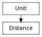

>>> from pymel.core import *
>>> import pymel.core.datatypes as dt
>>>
>>> dt.Distance.getInternalUnit()
'centimeters'
>>> dt.Distance.setUIUnit('meters')
>>> dt.Distance.getUIUnit()
'meters'
>>> d = dt.Distance(12)
>>> d.unit
'meters'
>>> print d
12.0
>>> print repr(d)
dt.Distance(12.0, unit='meters')
>>> print d.asUIUnit()
12.0
>>> print d.asInternalUnit()
1200.0
>>> dt.Distance.setUIUnit('centimeters')
>>> dt.Distance.getUIUnit()
'centimeters'
>>> e = dt.Distance(12)
>>> e.unit
'centimeters'
>>> print e
12.0
>>> str(e)
'12.0'
>>> print repr(e)
dt.Distance(12.0, unit='centimeters')
>>> print e.asUIUnit()
12.0
>>> print e.asInternalUnit()
12.0
>>> f = dt.Distance(12, 'feet')
>>> print f
12.0
>>> print repr(f)
dt.Distance(12.0, unit='feet')
>>> f.unit
'feet'
>>> print f.asUIUnit()
365.76
>>> dt.Distance.setUIUnit('meters')
>>> dt.Distance.getUIUnit()
'meters'
>>> print f.asUIUnit()
3.6576
>>> dt.Distance.getInternalUnit()
'centimeters'
>>> print f.asInternalUnit()
365.76
>>> print f.asFeet()
12.0
>>> print f.asMeters()
3.6576
>>> print f.asCentimeters()
365.76
>>> dt.Distance.setUIUnit()
>>> dt.Distance.getUIUnit()
'centimeters'
alias of MDistance